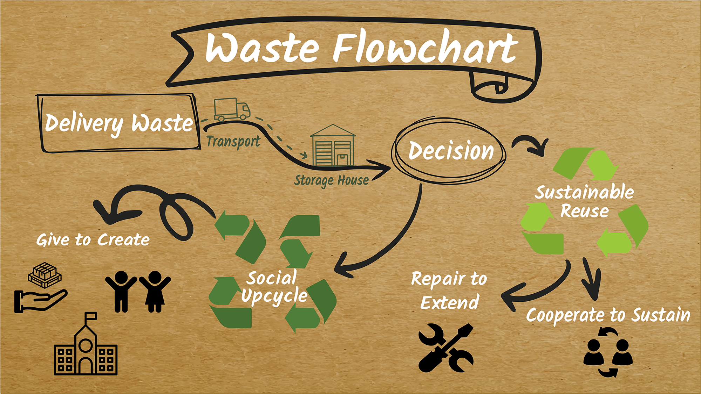

CONTEXT
InnoEvent is a 6-day design sprint event that gather over a thousand student from different universities and backgrounds. Students are grouped by the event members and a topic is presented. By the end of the week, a solution must be provided. The solution is presented in a cinema, in front of an audience and the best team of each topic is awarded with recognition and an economic prize.
PROBLEM
Kone is a company that moves thousands of people every day. They send packages around the world which then leave behind big amounts of packaging waste (cardboard, plastic and wood palette). The company did not have any use for this material, so they had the need to give this waste some better options than the landfill.
Based on the information we gathered from the professionals and workers from Kone, we decided that our solution should not only solve the need of Kone, but also give value to them and to society.
We hypothesized that, by introducing the concept of social upcycle, both Kone and people would benefit from it.
TEAM & ROLE
I was the sole UX researcher and designer on this improvised team of four members, consisting of two business students and a chemical engineer. I was responsible for determining the overall design direction of the project, while collaborating with the rest of the team on ideation.
We use an agile methodology to see what could work and not, evaluated in short briefs with the stakeholders. I the latter phase, I was also responsible for the graphic design and the presentation of the idea in front on an audience.
METHODOLOGY
The first step of the project was to get familiar with the topic and the company. We interviewed Kone’s workers and researched other stakeholders to gain information. We also benchmarked other solutions from different companies or organizations.
In this first phases of the design sprint, we used different techniques: brainstorming, the snowball technique, stakeholders map, personas, journey maps of the waste and pain & gains canvas.
Once we got our first set of design directions, we explored, developed and iterated them. We checked the solution with Kone’s workers to test them.
The final phase was for the visuals, the presentation and the report.
THE SOLUTION
We presented KoWaVa, a solution where we gave value to the waste. We designed a solution that gives the opportunity for children to create and innovate, that extend the life cycle of the packaging material.

The solution was based on the upcycling of the material into innovative woodworks or other sustainable secondary use. Once the waste was created, it was storage in a near place to later be supplied on demand to schools or organizations. Besides the material, downloadable templates and DIY projects would be available in Kone’s website, as well as a gallery to exhibit the upcycled products created out of the materials.
Waste flowchart and possible end-points

Prototype of how KoWaVa’s page could look and what services could have inside Kone’s website
CHALLENGES
One of the biggest challenges was to work alongside a team of unknown students with a topic we knew nothing about. We solved it by communicating a lot, creating a good working environment and where all ideas were listened and evaluated. We did a good user research and we focused on understanding the need.
As a professional, it made me performed as a leader of the group and apply the concepts I studied in university for a real-case scenario.
Another challenge was to present the idea in front of an audience and in English, which is my third language.
Nevertheless, all turn out good and a very enriching experience.
OUTCOME
With this solution we won the final gala. However, this project was just an idea of what companies could do with their material, giving it a better end than going directly to the landfill. We hope that companies follow this initiative and adopt a sustainable approach to their waste management.
LEARNINGS
With this project I learned on how to work with a diverse team, with different background and points of view. The positive energy and good environment of the team members was key for its success.
Thanks to this project I could apply the knowledge I gained from university and see how I performed as a design team leader and in stressful situations, as time was going against us.
It made me gain confidence in myself and my skills, as well in public speaking and team working.